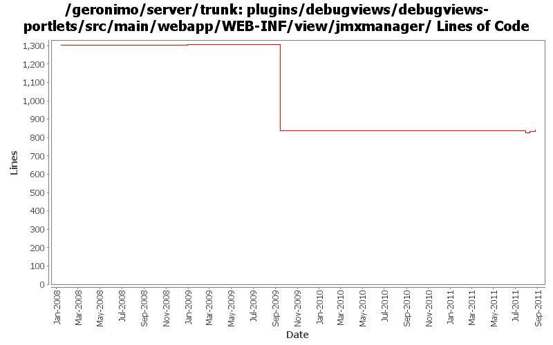

[root]/plugins/debugviews/debugviews-portlets/src/main/webapp/WEB-INF/view/jmxmanager

| Author | Changes | Lines of Code | Lines per Change |
|---|---|---|---|
| Totals | 16 (100.0%) | 739 (100.0%) | 46.1 |
| rwonly | 4 (25.0%) | 681 (92.2%) | 170.2 |
| dwoods | 4 (25.0%) | 35 (4.7%) | 8.7 |
| djencks | 3 (18.8%) | 16 (2.2%) | 5.3 |
| genspring | 1 (6.3%) | 5 (0.7%) | 5.0 |
| jbohn | 1 (6.3%) | 1 (0.1%) | 1.0 |
| gawor | 1 (6.3%) | 1 (0.1%) | 1.0 |
| ecraig | 2 (12.5%) | 0 (0.0%) | 0.0 |
GERONIMO-6125 The dojo tree should consider a tree entry which has no child as a leaf node.
6 lines of code changed in 1 file:
GERONIMO-6103 EJB Server and JNDI Viewer are not displayed correctly on Chrome (Thanks Shenghao Fang for the patch!)
75 lines of code changed in 1 file:
GERONIMO-6059 New look and feel of Geronimo 3.0 admin console (Step 1)
8 lines of code changed in 1 file:
GERONIMO-5674 Dojo related improvement. Patch from Xiao Yi to replace the full dojo with a customized dojo.
1, DojoHowToCompress/**/* files are the build script to build geronimo customized dojo.
2, dojo/**/* files are the customized dojo files for geronimo.
3, dojo-tomcat and dojo-jetty modules are removed.
4, customized dojo files are put into console-portal-driver webapp so that other jsp can reference the dojo
files with /console/dojo/xxx
5, also updated all dojo references in all jsps to the new dojo location.
5 lines of code changed in 1 file:
GERONIMO-4790 Migrate debug-views code to base on the up-to-date dojo: Sub-task 1
592 lines of code changed in 1 file:
GERONIMO-4753 upgrade to DWR 3.0M1, thanks to Rex Wang for the patch
16 lines of code changed in 1 file:
part 4 of more cleanup of old forms (see Rev738104 for part 3)
1 lines of code changed in 1 file:
GERONIMO-4474 Additional localization patches from Gang Yin.
1 lines of code changed in 1 file:
GERONIMO-4474 Pull out the text in the JSP files to resource bundle files. Patches provided by Gang Yin.
33 lines of code changed in 2 files:
GERONIMO-4081 Accessibility issue: Webking scan errors against 'Check Web Accessibility(Section 508)'
1 lines of code changed in 1 file:
Fix i18n problems in console. Patch from YunFeng Ma. (GERONIMO-3865)
1 lines of code changed in 1 file:
Changing Dojo 1.0.x to default /dojo
Moved context root of Dojo 0.4.3 to /dojo/0.4
Changed references in dependent plugins so they access proper versions correctly
0 lines of code changed in 2 files:
GERONIMO-1775 apply 2nd patch. Console-testsuite passes for me and I didn't see any problems
0 lines of code changed in 2 files: